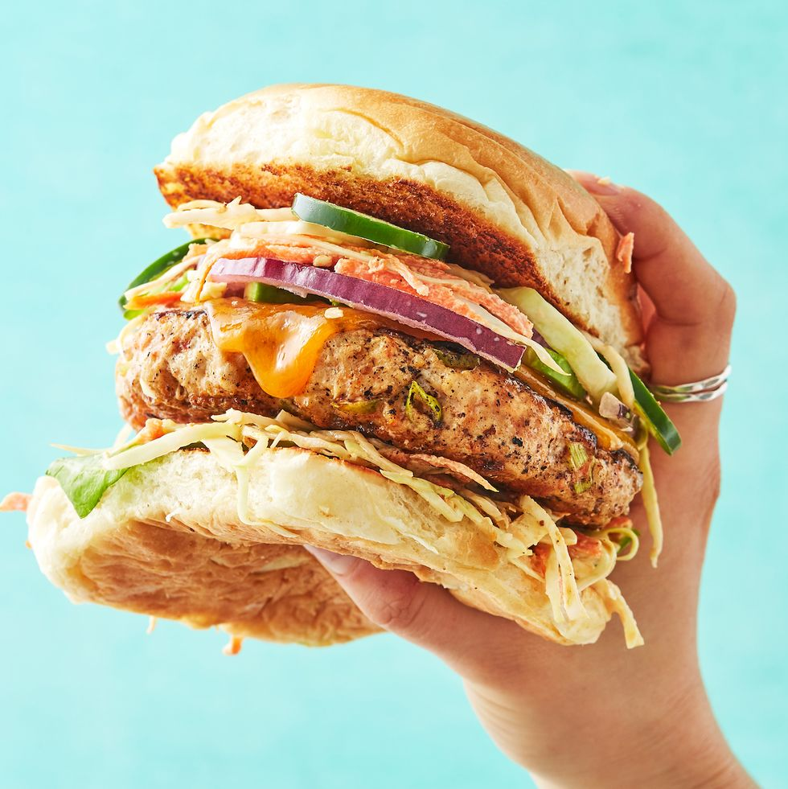

Ground Chicken Burger

Description
The Best Ground Chicken Burgers!
These ground chicken burgers are juicy, moist, and flavorful!
No more dry chicken, and you can have these burgers on the table in half an hour.
Ingredients
Burger Sauce
- 1 cup mayo
- 1 teaspoon Dijon mustard
- 2 teaspoons lemon juice
- 1/2 teaspoon smoked paprika
- Salt & pepper (to taste)
Burgers
- 1 pound ground chicken breast
- 1 large clove garlic (minced)
- 1 tablespoon fresh chives (chopped)
- 2 tablespoons fresh oregano (chopped)
- Juice of 1/2 lemon
- 1/2 cup breadcrumbs
- 2 tablespoons mayo
- Salt & pepper (to taste)
- Serve with: hamburger buns, butter leaf lettuce, tomato, avocado, red onion, etc.
Instructions
- Make the burger sauce by mixing the sauce ingredients together (mayo, mustard,
lemon juice, smoked paprika, and salt & pepper). Taste and adjust as needed.
- Oil and pre-heat your grill to medium-high heat.
- Chop the chives and oregano, and prepare your toppings.
- In a medium to large bowl, add the ground chicken, chives, oregano, minced garlic,
lemon juice, breadcrumbs, mayo, and salt & pepper. Using your hands, gently mix
everything together, taking care to not over handle the mixture.
- Form burger patties one by one and place them on a sheet of wax paper. You should
be able to make six average-size burger patties or four larger ones. Using your thumb,
create a depression in the center of each patty so they cook evenly.
- Cook the burger patties until internal temperature is at least 165F. Cooking time
really depends on your grill and the thickness of the patties. Mine took 5 minutes
on the first side and 4 minutes on the second side (gas BBQ).
- Once the burgers are cooked, you can toast the buns for about 30 seconds on each side if desired.
- Assemble burgers by spreading the mayo onto each bun and adding the burger patties and toppings.
Return to Homepage